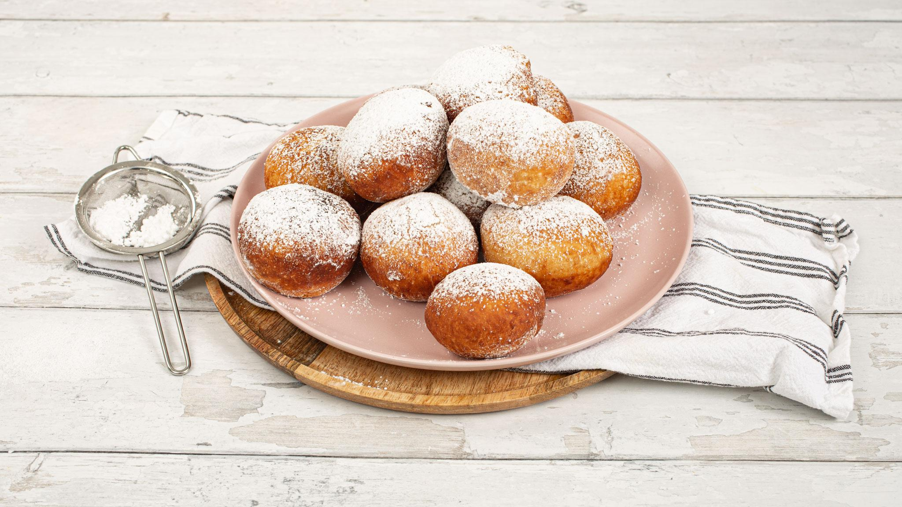
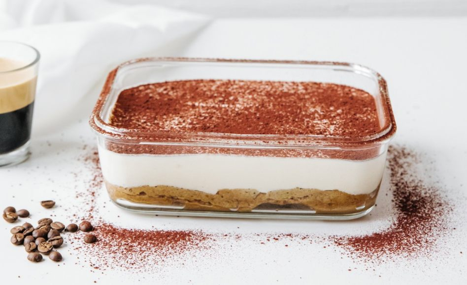

The Mandazi, African-donuts

Description
Mandazi are amazingly soft donuts very famous in East Africa. They are excellent served with a cup of tea or coffee. Their making involves foaming fresh (or dry) yeast in warm, sweet liquid (milk or water) and then kneading a firm dough and letting it rise. When it has doubled in size, the dough is cut in portions, rounded and gets a short rest, then shaped in to its final form, and deep fried after a longer rise.
Ingredients
- 4 cups flour
- 1 cup caster sugar
- 1 tablespoon dry active yeast
- 0.5 tsps nutmeg , freshly grated
- 1.5 cup warm water (35°C or more)
- 0.5 tsp salt
- Vegetable oil
Steps
- In a large bowl of water, mix 1 tablespoon caster sugar, ½ cup (100 ml) water, and the yeast.
- Let the yeast foam for 15 minutes.
- In the bowl of a stand mixer, add the flour, nutmeg and remaining sugar.
- Mix and dig a well in the center.
- Pour the mixture of water, sugar and yeast in the center of this well.
- Mix with the flat beater, adding the remaining water gradually. Knead for about 4 minutes, or until the mixture is stretchy and homogeneous.
- Add the salt and knead again for 2 minutes.
- Cover the dough and let it rise for 2h30, at room temperature and away from drafts.
- In a deep skillet, heat a large volume of oil over medium heat.
- To form the donut balls, dip the hand in cold water, hold a piece of dough in the hand. Press it between the thumb and forefinger, and let a small ball of dough slowly drop in the hot oil.
- Renew the process until all the dough is used.
- Deep-fry the donuts on both sides until golden brown.
- Drain on paper towels.
- Serve hot.
Other delicious dessert

This speculoos tiramisu is a simple variation on the classic Italian tiramisu with speculoos cookies.

This Woodland and animal cake is a chocolate sponge cake that is layered with a rich cherry filling and is based on the German dessert Schwarzwälder Kirschtorte, which means “Black Forest Cherry Torte”.